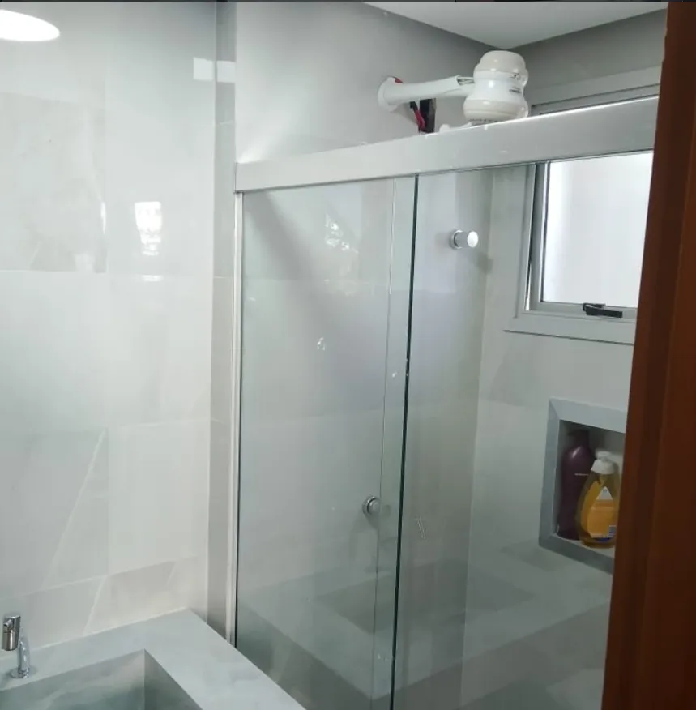
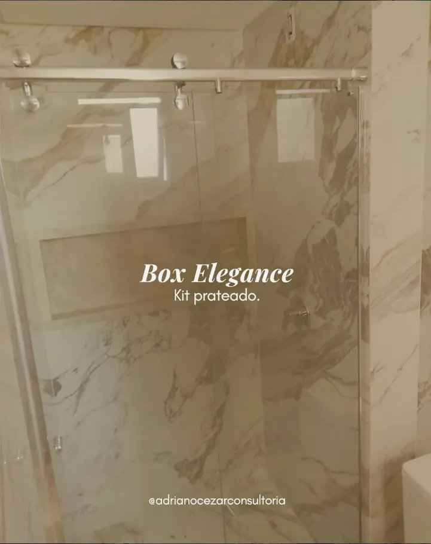
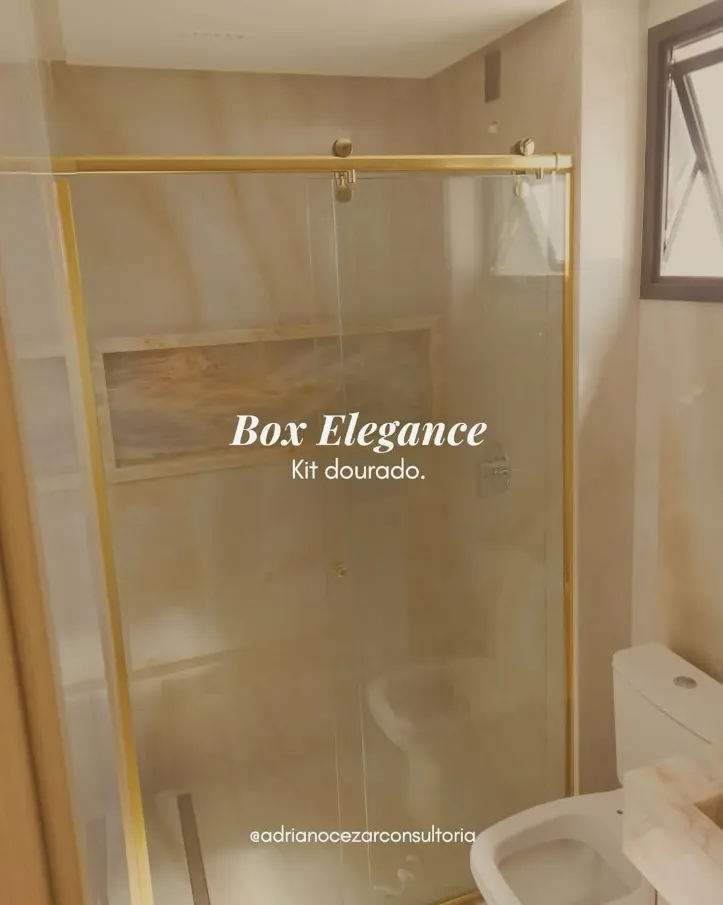
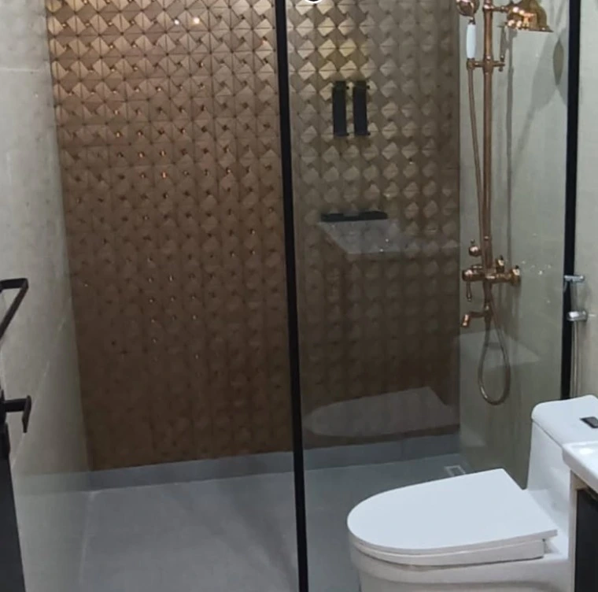
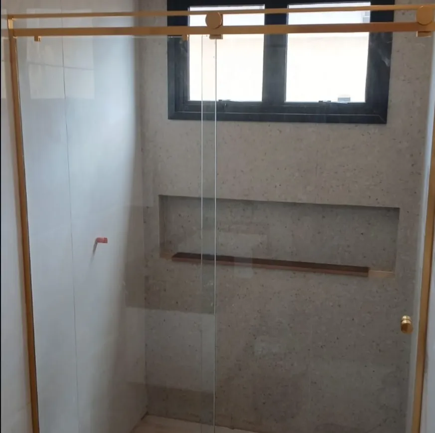
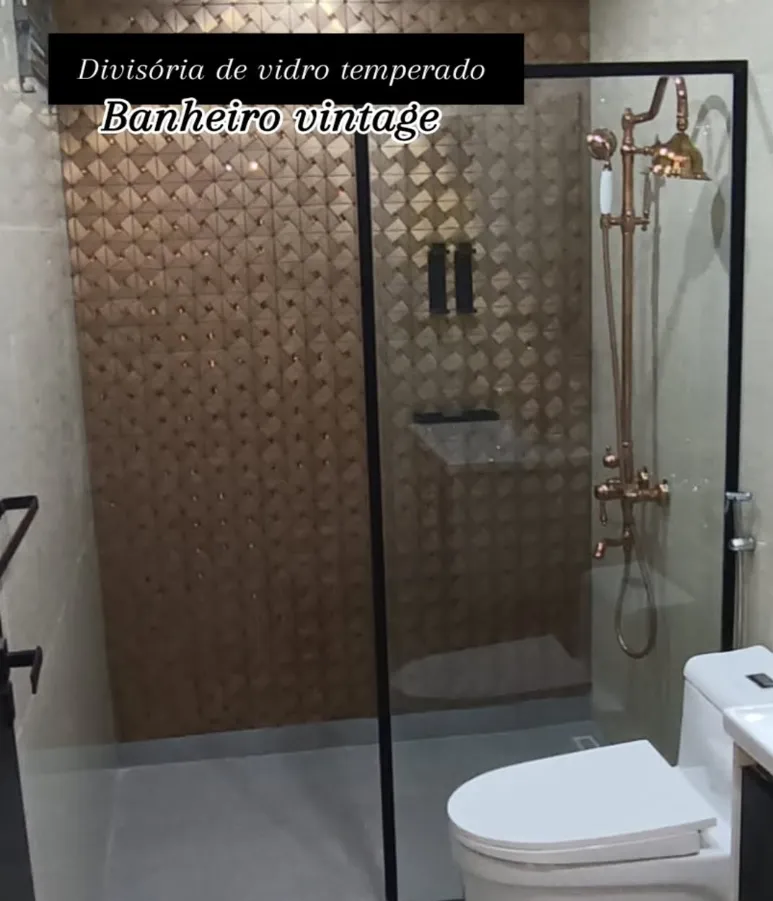
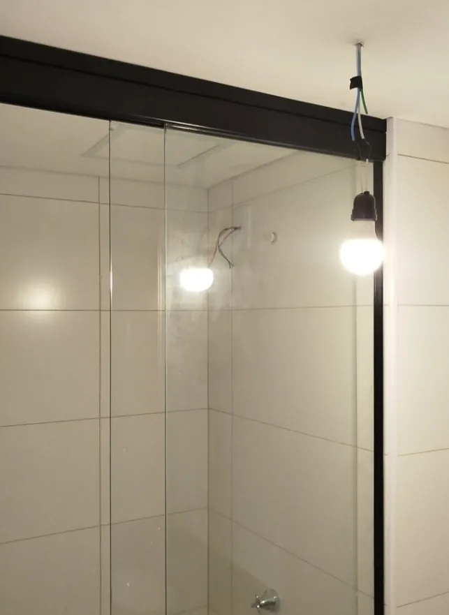

Nossos Trabalhos
Galeria de Box de Vidro Instalados em Goiânia
Confira alguns dos nossos projetos de box para banheiro em Goiânia realizados com excelência. Cada instalação é feita sob medida para garantir o encaixe perfeito.

Box de vidro frontal — Goiânia

Box sob medida para banheiro

Instalação profissional

Box sob medida — vidro 8mm

Acabamento premium com ferragens em alumínio

Vidraçaria Dinâmica — Goiânia

Projeto residencial completo

Box de canto angular